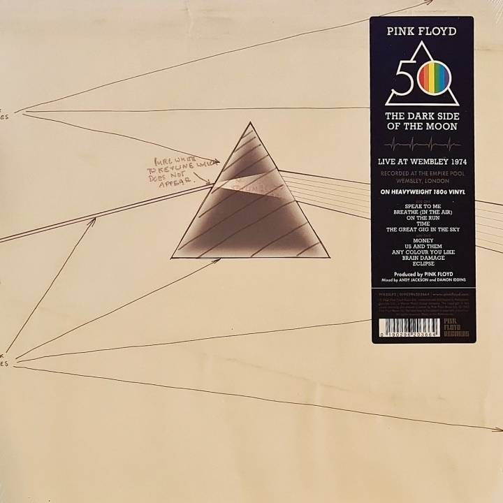

The Dark Side of the Moon
Wydany: 1 marca 1973 | Wytwórnia: Harvest Records
O albumie
"The Dark Side of the Moon" to ósmy album studyjny Pink Floyd, który stał się jednym z najważniejszych i najlepiej sprzedających się albumów w historii muzyki rockowej. Album spędził rekordowe 937 tygodni na liście Billboard 200, co czyni go jednym z najdłużej utrzymujących się albumów w historii tej listy.
Album eksploruje tematy takie jak konflikt, chciwość, upływ czasu, śmierć i choroba psychiczna – ta ostatnia inspirowana doświadczeniami z byłym członkiem zespołu, Sydem Barrettem. Muzyka łączy progresywny rock z elementami psychodelii, jazzu i muzyki eksperymentalnej, wykorzystując innowacyjne techniki studyjne i efekty dźwiękowe.
Produkcja albumu trwała ponad rok i wykorzystywała najnowocześniejsze technologie nagraniowe dostępne w Abbey Road Studios. Zespół eksperymentował z syntezatorami, taśmami magnetofonowymi i efektami dźwiękowymi, tworząc spójną koncepcję muzyczną, która płynnie przechodzi z utworu w utwór.
Ikoniczne okładki

Oryginalna okładka albumu
Zaprojektowana przez Storm Thorgerson i Hipgnosis, przedstawia pryzmat rozszczepiający światło na spektrum kolorów – symbol jedności i różnorodności ludzkiego doświadczenia.

Ikoniczny pryzmat
Pryzmat stał się jednym z najbardziej rozpoznawalnych symboli w historii muzyki rockowej, reprezentując transformację i oświecenie.
Lista utworów
| Nr. | Tytuł | Długość | Opis |
|---|---|---|---|
| 1. | Speak to Me | 1:30 | Instrumentalne intro z efektami dźwiękowymi |
| 2. | Breathe (In the Air) | 2:43 | Spokojny utwór o życiu i jego przemijaniu |
| 3. | On the Run | 3:30 | Eksperymentalny utwór o podróżowaniu i lęku |
| 4. | Time | 6:53 | Jeden z najbardziej znanych utworów, o upływie czasu |
| 5. | The Great Gig in the Sky | 4:36 | Wokalny tour de force Clare Torry o śmierci |
| 6. | Money | 6:22 | Satyryczny utwór o chciwości w nietypowym metrum 7/4 |
| 7. | Us and Them | 7:49 | Refleksja nad konfliktem i empatią |
| 8. | Any Colour You Like | 3:26 | Instrumentalny jam z syntezatorami |
| 9. | Brain Damage | 3:46 | Utwór o chorobie psychicznej inspirowany Sydem Barrettem |
| 10. | Eclipse | 2:03 | Finałowy utwór podsumowujący tematy albumu |
Osiągnięcia i wyróżnienia
Sprzedaż
Ponad 45 milionów sprzedanych kopii na całym świecie
Certyfikaty
15× Platyna w USA, wielokrotna platyna w wielu krajach
Grammy Hall of Fame
Wprowadzony w 1999 roku
Library of Congress
Dodany do National Recording Registry w 2012
Rolling Stone
Miejsce w rankingu 500 Greatest Albums of All Time
Ciekawostki
- Album był synchronizowany z filmem "Czarnoksiężnik z Krainy Oz", tworząc zjawisko zwane "Dark Side of the Rainbow"
- Dźwięk bijącego serca na początku i końcu albumu symbolizuje cykl życia
- Clare Torry nagrała wokal do "The Great Gig in the Sky" w zaledwie dwie i pół godziny, improwizując całość
- Album był nagrywany przy użyciu 16-ścieżkowej taśmy, co było nowością w tamtych czasach
- Zespół użył syntezatora VCS3 do stworzenia wielu charakterystycznych dźwięków
- Okładka nie zawiera nazwy zespołu ani tytułu albumu na przedniej stronie
Wpływ kulturowy
"The Dark Side of the Moon" zmienił oblicze muzyki rockowej i ustanowił nowe standardy dla albumów koncepcyjnych. Jego wpływ wykracza daleko poza muzykę – okładka z pryzmatem stała się ikoną popkultury, pojawiając się na niezliczonych produktach, w filmach i sztuce.
Album udowodnił, że muzyka rockowa może być zarówno komercyjnie udana, jak i artystycznie ambitna. Jego sukces otworzył drzwi dla innych zespołów progresywnych i zachęcił artystów do eksperymentowania z formą i treścią.
Do dziś "The Dark Side of the Moon" pozostaje punktem odniesienia dla muzyków i producentów, a jego tematy o kondycji ludzkiej są równie aktualne jak w 1973 roku. Album udowodnił, że wielka muzyka jest ponadczasowa.